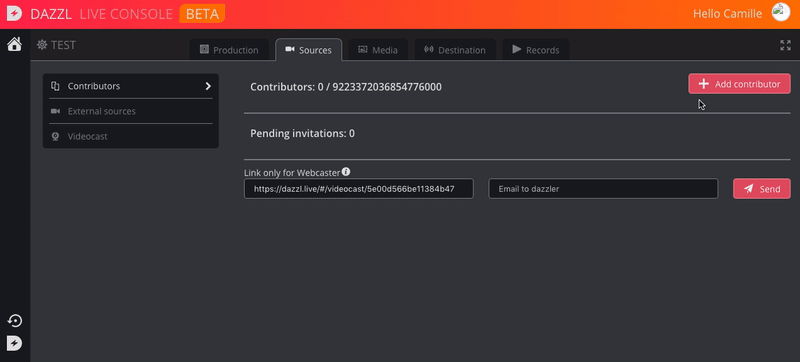
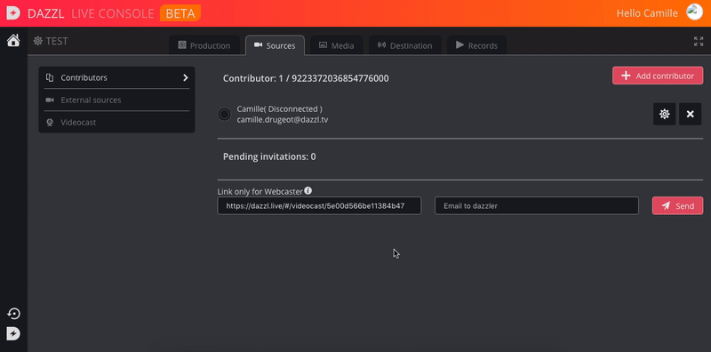

How to add contributors and webcaster ?
Add a contributor
By adding a contributor, you allow him/her to contribute to your event. You have to do it for each event you are performing.
Select the "Sources" tab, and click on "add a contributor". You will then be invited to add the mail address and name of your new contributor. You can also add a shortcut, to switch easily to this source when performing your live. You can click here to learn more about shortcuts.
Inviting your new contributor will send him a notification email.
- If he/she already has an account, he/she will directly be able to join you live by connecting themselves to the Dazzl app. They will first appear as "off" in the contributors list. It may take few seconds to refresh.
- If they don't, they will be invited to create it. In the meantime, they will appear in the "Pending invitations" section.

Add a webcaster
Add a webcaster, will allow him/her to contribute to the event by using is webcam or an other device connected to his/her computer, such as a camera, a microphone, etc.
First of all, you have to add this person as a contributor allowing him/her to take part in the live show.
Then, you can send the webcast url, by copying/pasting the "link only for webcaster", or by indicating their email address in the box provided for this purpose.
He/she will be invited to login into his/her account, and will be directly redirected into the webcast window.

From a remote commentator perspective
Once the email is sent to the remote commentator, he will receive the link allowing him to contribute.
He will then have to click on it and log into his account. If he doesn't have an account yet, he will be asked to create one.
The Dazzl Commentary studio will then open on his browser, allowing him to contribute to the event.